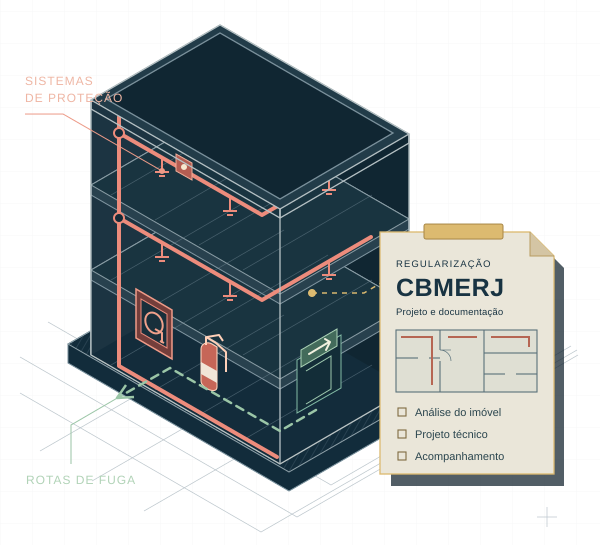

01
Projeto de
incêndio
Elaboração do projeto com as medidas de segurança contra incêndio e pânico conforme as características do imóvel.
Conversar sobre meu projetoSegurança contra incêndio
Projetos de segurança contra incêndio, orientação para adequações e acompanhamento da regularização do seu imóvel no CBMERJ.
Prevenção, proteção e orientação técnica.
Do projeto à documentação.

Cada uso, uma análise.
CondomíniosComérciosIndústriasEstado do Rio de JaneiroDiagnóstico rápido
Responda a 4 perguntas sobre seu imóvel. Ao final, compartilhe seu resumo no WhatsApp e converse com a equipe.
Este questionário organiza suas informações para o atendimento. Não substitui vistoria, laudo ou análise de enquadramento por profissional habilitado.
Prefiro falar pelo WhatsAppEste questionário organiza suas informações para o atendimento. Não substitui vistoria, laudo ou análise de enquadramento por profissional habilitado.
Ao abrir o WhatsApp, você compartilha as quatro respostas acima com esse serviço. O questionário não envia informações automaticamente.
01 / Nossa atuação
Projeto, aprovação pelo Laudo de Exigências, adequação do imóvel e Certificado de Aprovação: acompanhamento técnico em cada etapa.
Elaboração do projeto com as medidas de segurança contra incêndio e pânico conforme as características do imóvel.
Conversar sobre meu projetoAcompanhamento da análise pelo CBMERJ até a emissão do Laudo de Exigências, que formaliza a aprovação do projeto.
Entender a aprovação do projetoOrientação e acompanhamento das adequações previstas no projeto aprovado e no Laudo de Exigências, incluindo os sistemas de proteção.
Planejar as adequaçõesApós as adequações, acompanhamento da solicitação do Certificado de Aprovação, que formaliza a regularização do imóvel no CBMERJ.
Regularizar meu imóvel02 / Como trabalhamos
Da elaboração do projeto ao Certificado de Aprovação, organizamos o percurso conforme a situação do seu imóvel.
Levantamos as características da edificação e elaboramos o projeto de segurança contra incêndio e pânico.
Apresentamos o projeto ao CBMERJ e acompanhamos a análise para emissão do Laudo de Exigências.
Orientamos as adequações e a implantação das medidas previstas no projeto aprovado e no Laudo de Exigências.
Com as adequações realizadas, acompanhamos a solicitação do Certificado de Aprovação junto ao CBMERJ.
O ponto de partida pode ser um projeto existente, uma notificação ou a primeira análise do imóvel.
Vamos entender o seu cenárioEngenheira responsável
Engenheira Civil
Engenheira de Segurança do Trabalho
COMECE PELO QUE VOCÊ JÁ SABE
Organize as informações iniciais para conversar com a TxJ sobre os próximos passos.
03 / Antes de começar
Algumas respostas para dar
o primeiro passo.
Comece reunindo as informações sobre o uso, a localização e a documentação existente. A análise técnica identifica a situação da edificação e orienta os próximos passos conforme suas características.
Você pode enviar o projeto e os documentos disponíveis para a análise inicial da demanda. O escopo de atuação será definido a partir da situação do imóvel.
Não. O questionário organiza as informações para o atendimento. Ele não substitui vistoria, laudo ou avaliação por profissional habilitado, nem confirma a regularidade do imóvel.
O atendimento abrange o Estado do Rio de Janeiro, conforme a disponibilidade e o escopo do serviço. Informe a localização do imóvel na conversa inicial.
Seu próximo passo
Conte onde fica o imóvel e o que você precisa resolver. A partir daí, conversamos sobre a orientação técnica adequada.
Falar pelo WhatsApp(21) 99132-6294Atendimento no Estado do Rio de Janeiro